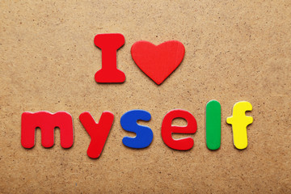
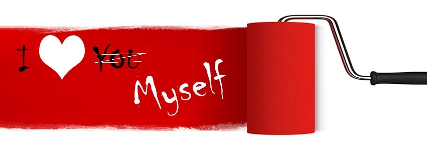

|  |  | |
| Home || About|| Portfolio|| Gallery|| Contact|| | ||
Mission“To serve as a leader, live a balanced life, and apply ethical principles to make a significant difference.” “The personal mission statement was important for me because I believe that you can’t lead others unless you have a strong sense of who you are and what you stand for. For me, living a balanced life means nurturing the academic, physical,and spiritual aspects of my life so I can maintain a sense of well-being and self-esteem.” Vission
Dream
|
||
|
2017, all right reserved @asif-185441 |
||